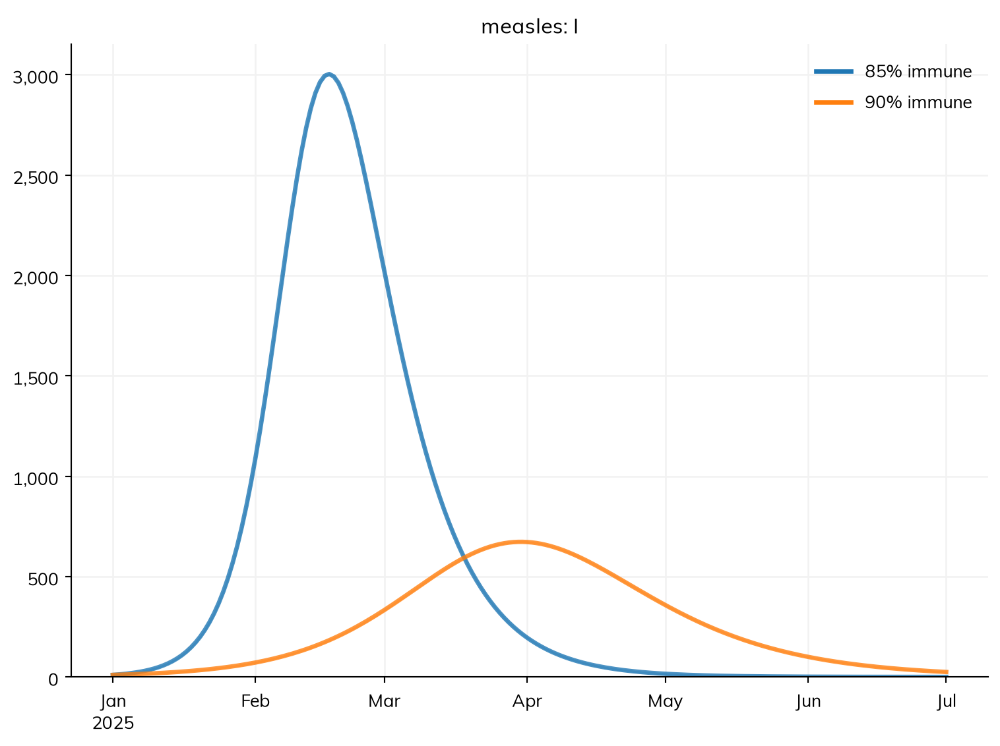
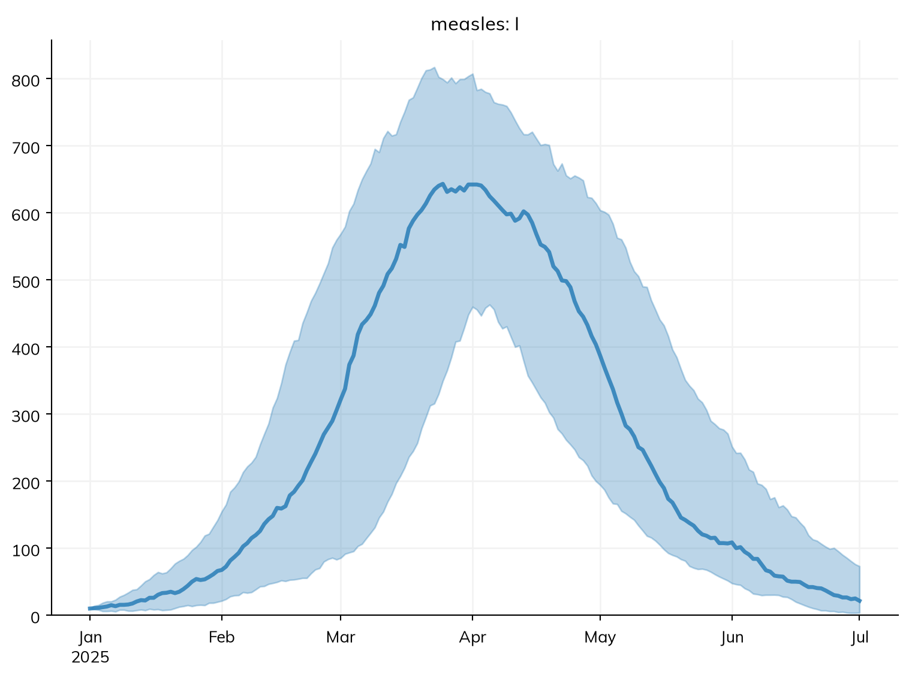
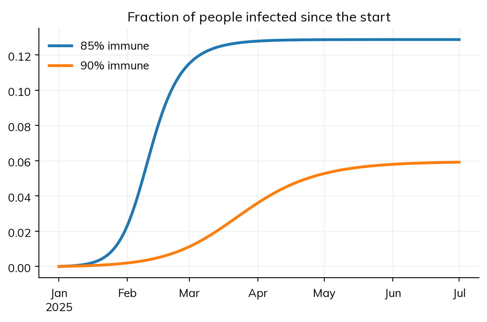

A run produces results: for each disease, the number of people in each state at each time point, the number who made each transition in each step, and any other quantities the model declares. This page covers reading, resampling, grouping, summarizing, exporting, and plotting them. Results know their labels, time points, and kinds, so most plots take one line.
Reading results
After a run, sim.results holds the results of each module by name, and the sim’s own (such as alive, the population size). The examples on this page use a measles outbreak in a town where 90% are immune, written as a function so that scenarios can be compared later:
import starsim as ssdefmake_measles(immune=0.9): S, I, R = ss.states('S I R') infection = S >> I @1.9*I # β = 1.9 per day recovery = I >> R @ ss.days(8) # Infectious for 8 days on average prevalence = I/(S + I + R) # The fraction of people infectiousreturn ss.Disease(infection, recovery, prevalence, init=dict(R=immune), init_n=dict(I=10), name='measles')sim = ss.Sim(make_measles(), total_pop=100_000, start='2025-01-01', stop='2025-07-01', verbose=0)sim.run()res = sim.results.measlesprint(res)
library(starsim)make_measles <-function(immune =0.9) {states("S I R")Disease(infection =Transition(S, I, rate =1.9* I), # β = 1.9 per dayrecovery =Transition(I, R, dur =days(8)), # Infectious for 8 days on averageprevalence = I / (S + I + R), # The fraction of people infectiousinit =list(R = immune),init_n =list(I =10),name ="measles" )}sim <-Sim(make_measles(), total_pop =100000, start ="2025-01-01", stop ="2025-07-01", verbose =0)sim$run()res <- sim$results$measlesres
A disease has a result for each state (S, I, R: the number of people in it at each time point) and each transition (infection, recovery: the number who made it during each step), named after the variables they were made from, plus any ratio or outcome declared with it, such as prevalence here. res.I and res['I'] are the same. Names with special meaning lists the results every disease and the sim get, and Outcomes covers declaring more, such as reported cases.
Each result is an ss.Result. It behaves like a NumPy array, one number per time point, but also carries what it is:
Attribute
Meaning
values
The NumPy array of values
timevec
The time point of each value
label
A human-readable label, used in plots
kind
What kind of quantity it is: a stock, a flow, or a ratio (below)
scale
Whether the result is a count that scales with the population (as agents, each agent stands for some number of people); by default, a flow or stock does and a ratio doesn’t
low, high
Bounds, for a result that has them
print('Peak infectious:', round(res.I.max()))print('Total infections:', round(res.infection.sum()))print('First time points:', res.I.timevec[:3])
Peak infectious: 673
Total infections: 5918
First time points: [<2025-01-01> <2025-01-02> <2025-01-03>]
A result’s kind decides how it is added up over time (its summarize_by), whether it has a running total, and how it is compared with data:
kind
summarize_by
What it is
Examples
Over a period
'stock'
'last'
A number at each time point
S, I, R
Resampled, the value at the start (a running total, .cum, at the end); over the whole run, the last value
'flow'
'sum'
A number of events during each step
infection, recovery, cases
The total
'ratio'
'mean'
One number divided by another
prevalence
Worked out again from the totals of its parts (the mean, for one with no parts)
A result of your own gives it as ss.Result('protected', kind='stock'), or by its name (appendix). scale= overrides whether it is scaled, and kind=None is for a result with no meaning over time, which isn’t summarized. summarize_by= summarizes it another way without changing what it is: ss.Result('new_cases', kind='flow', summarize_by='mean') is still a flow, whose summary over the run is its mean per step.
A flow’s running total is .cum, so res.infection.cum[-1] is the number of infections over the whole run. Summing a stock over time does not count people (res.I.sum() counts each person once for every step they are infectious), and the people infectious at the start are not in infection.sum(). A result also does what a NumPy array does (indexing, arithmetic, sum(), max()); every method of a result is listed in the API reference.
A result has one value for each time point, from start to stop, and each time point is the step that starts there: I[0] is the number infectious at the start, and infection[0] the infections during the first step (Time).
Changing the time step of a result
resample() gives a result over longer periods ('day', 'week', 'month', 'year', or a duration such as ss.weeks(2)), adding it up by its summarize_by: weekly infections are the total over each week, monthly numbers infectious are the value at the start of each month, and a running total is the value at the end of each period. Each period is labeled by its start. to_series() gives a pandas series with the dates as its index:
A disease stratified by age (see Stratification) still has one result for each state and transition; each is the total over the groups, and has the groups inside it. select() picks groups, and by() gives one line for each. Here the model is stratified by age, with the contact matrix of Stratification; with contacts, β is per contact, so it is given by name:
A ratio such as prevalence is never averaged over groups: its numerator and denominator are each added up over the groups selected, and then divided. A module written as code can keep its results by group too: stratify the sim (stratify=dict(sex=['female', 'male'])), make the result with ss.Result(..., groups=True), and set it at each step with set_groups() from sim.groups.count(), which counts the people in each group for whom a condition holds. As agents, stratifying by a property people already have, such as sex or age, changes nothing in the run, so it can be done for the results alone.
Results with several columns
In a module written as code, a result with several values at each time point, such as new infections by age group, is made with columns=. Here an analyzer counts new infections among children and adults:
import numpy as npclassInfectionsByAge(ss.Analyzer):""" Count new infections among children and adults """definit_results(self):super().init_results()self.define_results( ss.Result('new_infections', columns=['children', 'adults'], label='New infections'), )defstep(self): new =self.sim.diseases.sis.infection.uids # Those infected in this step children =self.sim.people.age[new] <15self.results.new_infections[self.ti] = [np.count_nonzero(children), np.count_nonzero(~children)]cols = ss.Sim(ss.SIS(), networks='random', analyzers=InfectionsByAge(), n_agents=2000, start='2000-01-01', stop='2000-12-31', verbose=0)cols.run()infs = cols.results.infectionsbyage.new_infectionsinfs.resample('month').to_df().head()
time
children
adults
0
2000-01-01
1607.0
4864.0
1
2000-02-01
1276.0
3767.0
2
2000-03-01
1425.0
4053.0
3
2000-04-01
1307.0
3985.0
4
2000-05-01
1396.0
4155.0
Each column is a result of its own, as infs.adults, infs['adults'], or infs.select(column='adults'), sharing its data with the whole. Most operations handle each column separately: scaling, to_df(), sim.summarize(), resample(), and plot(), which draws one line per column.
Summaries, export, and many runs
Data is matched to results by name: a column called cases in a table given as data= is compared with the result cases, and plotted with it. Outcomes covers attaching data; it is the data that calibration fits to.
sim.summarize() gives each result over the whole run, by its summarize_by: the total of a flow, the final value of a stock, and the mean of a ratio. It is a table with a row for each result and one column, value, as msim.summarize() gives for many runs, so the two read the same way. sim.summarize('measles_infection') gives one result’s summary as a number, and how= summarizes another way, e.g. sim.summarize('measles_I', how='max') for the peak.
to_df() gives results as a table (a pandas dataframe), for the whole sim, one module (sim.results.measles.to_df()), or one result (res.I.to_df()), to save with df.to_csv() or df.to_excel(). sim.results.flatten() gives them as a flat dict, keyed like the columns (measles_I).
summary(sim) # As sim$summarize(), as a named vectordf <-as.data.frame(sim) # As sim$to_df(), as an R data framehead(df)
Results of many runs
The runs of a stochastic model together (see Scenarios) have the same results as one run, with every run inside each:
msim = ss.parallel(sim.new(solver='binomial'), n_runs=20)mres = msim.results.measles.Imedian = mres.median() # The median of the runs at each time pointlow, mid, high = mres.quantiles() # The 2.5%, 50%, and 97.5% quantiles at each time pointfirst = mres.select(run=0) # One run
take() keeps some runs, scenarios() and axes() say how they are arranged, and diff('baseline') is the difference of each other scenario from the one labeled 'baseline', run by run (msim.diff('baseline') does it for every result). msim.summarize() gives the median and interval of each result over the whole run, which is not the same as the median at each time point: the quantiles at each time point don’t give the quantiles of the peak or of the total size.
Plotting
Plotting a sim
sim.plot() plots every result that is plotted by default, each in axes of its own, labeled and dated from the results, with any data as points (show_data=False leaves it out). The sim’s own results that never change are left out; show_skipped=True includes them.
The results in an inner list together in one axes, with a legend
A name that matches no result is an error that lists the names there are. Put together only results of the same kind on a similar scale, such as the two flows here:
sim$plot(list(list("measles.infection", "measles.recovery"), "measles.I"), figsize =c(8, 6)) # A list in a list: together in one axes
A module plots its own results with plot(): 'states' (the default, together in one axes), 'flows', 'all', or the names of results, e.g. sim.diseases.measles.plot('I', 'prevalence'). A model run over years can be plotted as yearly values with annualize=True, which adds up each result by its kind.
Plotting results
A single result plots itself, with its label as the title, and so does anything made from one: a resampled result, one group (select(age='0-14')), or one line per group (by('age')). Each plotting function takes the common Matplotlib settings by name (color, lw, alpha, figsize, and the others of ss.plot_args()), and anything else in a dict: plot_kw= to plt.plot(), fig_kw= to plt.figure(), data_kw= to plt.scatter(). log=True gives a log scale.
Sims run together, with ss.parallel() or ss.MultiSim, plot together: each result is one axes, with a line for each scenario, labeled by the sims’ labels. The runs of a stochastic model are plotted as their median at each time point, with a band holding 95% of the runs; lines=True plots every run instead:
scenarios = {'85% immune': ss.Sim(make_measles(0.85), total_pop=100_000, start='2025-01-01', stop='2025-07-01', verbose=0),'90% immune': ss.Sim(make_measles(0.90), total_pop=100_000, start='2025-01-01', stop='2025-07-01', verbose=0),}ss.parallel(scenarios).plot('measles.I')msim.plot('measles.I') # The 20 runs above: the median and the range of 95% of them


Plots mark when interventions act (a dashed line at each round of a delivery, and at the start of an ss.modify() or routine delivery), in gray for marks every scenario shares and in a scenario’s color for its own; show_interventions='fill' shades the span from each one’s start to its stop instead (lightly, so overlapping ones show darker), and show_interventions=False leaves them out. msim.plot_each() plots each run on its own time axis, for sims with different time points.
Styles, saving, and Matplotlib
Plots use Starsim’s style ('starsim', with the Mulish font) by default; style= takes 'simple', 'fancy', or any Matplotlib style such as 'ggplot', and font= another font ('sans-serif' for Matplotlib’s default). ss.options(style='simple') changes every plot.
In Jupyter, a plotting function shows the figure and returns nothing; filename= saves it as well, and do_show=False returns the figure without showing it. In a script, the figure is always returned (and shown as ss.options.show says), so it can be saved with fig.savefig(). A figure or axes given with fig= or ax= is not shown, so more can be plotted into it.
Anything else can be plotted with Matplotlib from the results, since a result is an array with its time points. ss.style() applies Starsim’s style to plots of your own, and sc.commaticks() from Sciris puts commas in large numbers on an axis:
import matplotlib.pyplot as pltwith ss.style(): fig, ax = plt.subplots(figsize=(7, 4))for label, scenario in scenarios.items(): sres = scenario.results.measles ax.plot(sres.infection.timevec, sres.infection.cum/100_000, label=label) # Infected since the start, as a fraction ax.set_title('Fraction of people infected since the start') ax.legend() plt.show()

msim.to_df(quantiles=[0.025, 0.5, 0.975]) gives the quantiles of every result across runs, in long form, for pandas, seaborn, or any library that works with tables. Besides results over time, Starsim draws maps, diagrams, people and contacts, distributions, fits, and timings; the appendix lists every plotting function.
Pitfalls and further reading
The flow at a time point is the step that starts there. The weekly total dated 3 March is the week from 3 March. Data dated by the end of each period (“week ending”) needs its dates moved back by one period to be compared.
Agents’ results are scaled. With each agent standing for several people, counts are multiplied by that number when the run ends; a count read in the middle of a run is in agents (see Branching and rescaling).